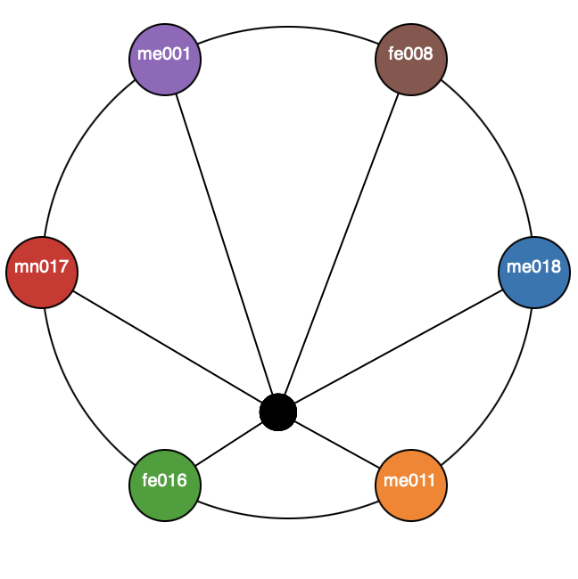
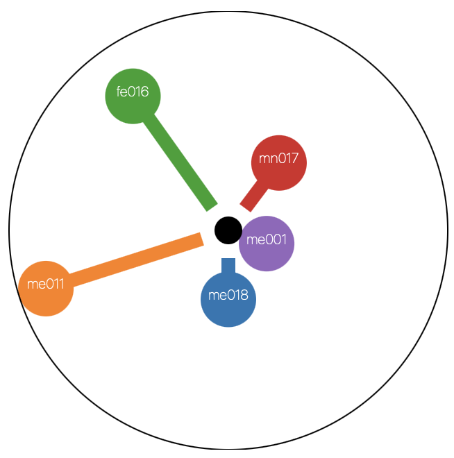
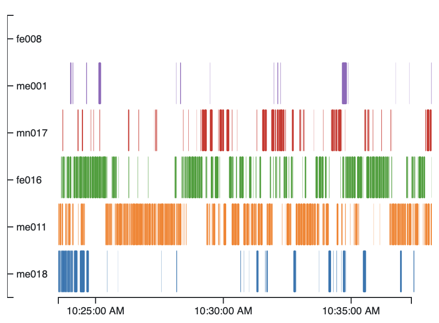

Conversation Visualization
Motivation
This project aims to prototype different visualizations for video conferencing platforms with the help of feedback from users, scholars and the average remote worker in the 21st century. The goal of the prototyped visualizations is to enable equitable outcomes for meeting participants. A common gripe among meeting participants is that they either do not get an opportunity to speak or that the meeting topic is not relevant to their interests.
Data
We use the ICSI Meeting Corpus to conduct our visualization design study. The International Computer Science Institute (ICSI) Meeting Corpus is an audio data set consisting of about 70 hours of meeting recordings. The data consists of individual lapel mic recorded channels of audio for each participant and also contains the transcript for the accompanying conversation. The transcript files are presented as .mrt xml files. We parse the .mrt files and extract the start and end times of the utterances, the participant id and the uttered text. The files are divided into different segments depending on the speaker. If a vocal sound was made the segments contain text transcriptions. If a non vocal sound was made the segment contains a description of the sound. For convenience we have chosen to ignore segments without text and focus solely on Vocal segments. There are 75 separate meetings that have been transcribed. Each meeting is labelled according to the type of meeting it belongs to and has a different number of participants.
Task Analysis
This table is a task analysis for the post-meeting conversa- tional dynamics visualization. Tasks are ordered from highest priority to lowest. (*) indicates top priority tasks.
| # | Domain Task | Abstract Task | Task Level |
|---|---|---|---|
| 1 | Compare the behavior of meeting participants* | Query: Compare | Low |
| 2 | Annotate the different Entities in the transcript* | Produce: Annotation | High |
| 3 | Identify behavioral outliers* | Query: Identify | Low |
| 4 | Identify links between speakers* | Produce: Derive & High | High |
| 5 | Record a meeting in an effective manner | Analyze: Record | Low |
| 6 | Browse through topics explored in the meeting | Search: Explore | Mid |
Final Visualization

Radial Balance Plot
The Radial Balance Plot is a variation of Riff Analytics' MeetingMediator widget. The purpose of this visualization is to tell how imbalanced a conversation is from the beginning of the conversation. The central black dot denotes the "Center of Mass" of the participants. Here the "Mass" of each participant is the time each utterance takes.
Radial No-Lie Plot
The Radial No-Lie Plot is designed as a radial bar chart around the central point. The bars encode the percentage of conversation time that each participant dominates. The need for this plot was motivated by the Lie-Factor introduced by the Radial Balance Plot.
Broken Bar Plot
The Broken Bar Plot is a standard borizontal bar plot where each of the individual colored rectangular segments represent an utterance. The length of each rectangle corresponds to the time it takes for utterance.
Future Work
- MacOS Client
- Currently, the Zoom Bot client only supports Windows. A MacOS client will be developed soon.
- Modified Color Scheme
- We use the default D3 Ordinal Color Scheme. Given the low number of categories we do not see any efects of not using a specific color palette. However for a large number of users, this may be required.
- NLP Based Sentiment and Topic Detection
- An NLP pipeline can be used to analyse the transcript data realtime
- Support Different File-formats
- We currently use a
.jsonfiles to store the transcript. However the original transcripts are.mrtfiles